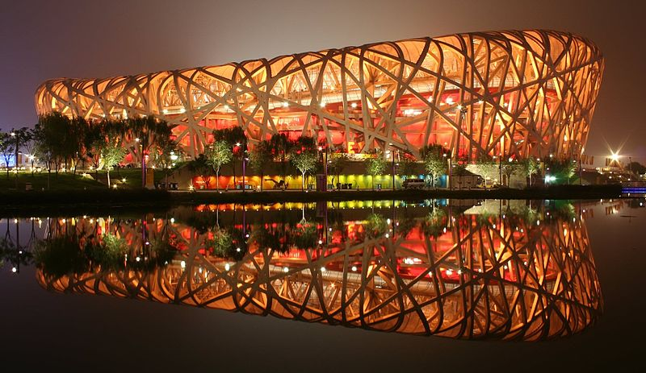

Ville de Pekin
Pékin, la millénaire
Pékin, capitale millénaire de la Chine, est une ville qui mêle harmonieusement traditions séculaires et modernité effervescente. Avec une histoire riche remontant à plus de 3 000 ans, Pékin est un véritable trésor culturel et historique.
Au cœur de la ville se dresse la Cité Interdite, un palais impérial majestueux qui fut le centre du pouvoir pendant plus de 500 ans de l'histoire chinoise. Avec ses vastes cours, ses pavillons ornés et ses jardins luxuriants, la Cité Interdite est un symbole de l'ancienne grandeur impériale de la Chine.
Pékin est également réputée pour son architecture moderne, incarnée par des monuments tels que le Stade National de Pékin, surnommé le "Nid d'Oiseau" en raison de sa structure en acier entrelacée. Ce chef-d'œuvre architectural a accueilli les Jeux olympiques d'été de 2008, laissant un héritage durable dans la ville.
Les hutongs, des ruelles traditionnelles bordées de maisons en cour carrée, offrent un aperçu charmant de la vie quotidienne des habitants de Pékin. Se promener dans ces quartiers pittoresques permet de découvrir l'authenticité et le caractère intemporel de la ville.
La Grande Muraille de Chine, l'une des merveilles du monde, est située à une courte distance de Pékin. Ce chef-d'œuvre d'ingénierie s'étend sur des milliers de kilomètres à travers les montagnes et offre des vues spectaculaires sur le paysage environnant.
La cuisine de Pékin est également renommée, avec des spécialités telles que le canard laqué, les raviolis jiaozi et les nouilles sautées. Les marchés alimentaires animés de la ville regorgent de délices culinaires à déguster.
Enfin, Pékin est une ville dynamique où se côtoient traditions anciennes et innovations modernes, offrant aux visiteurs une expérience unique et inoubliable au cœur de la Chine. Découvrir plus sur l'Asie